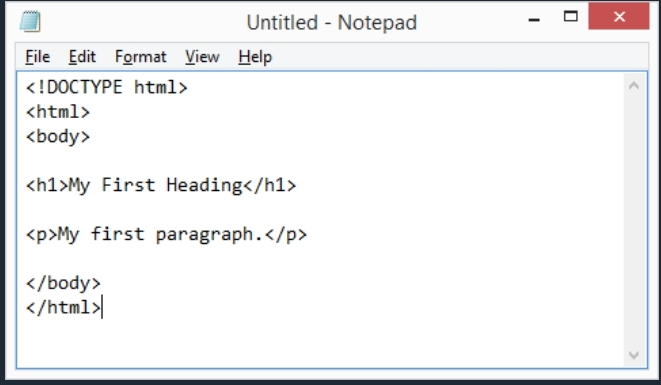
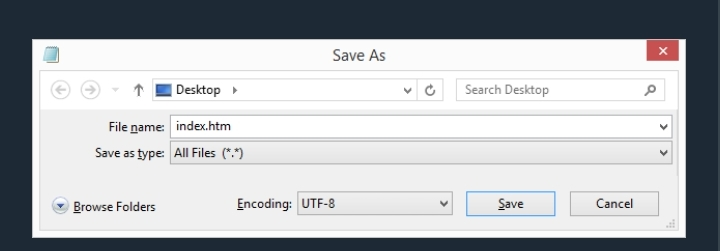
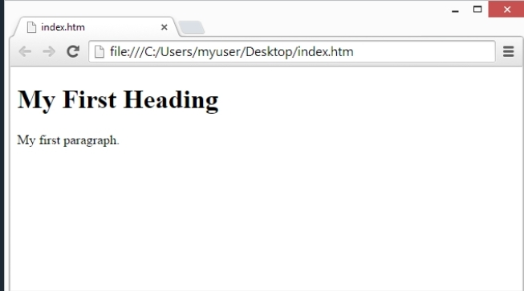

HTML Editor
Learn HTML using notepad or textedit
Web pages can be created and modified by using professional HTML editors. However, for learning HTML we recommend a simple text editor like Notepad (PC) or TextEdit (Mac). We believe that using a simple text editor is a good way to learn HTML. Follow the steps below to create your first web page with Notepad or TextEdit.
Step 1: Open Notepad (PC)
Windows 8 or later: Open the Start Screen (the window symbol at the bottom left on your screen). Type Notepad. Windows 7 or earlier: Open Start > Programs > Accessories > Notepad
Step 1: Open Textedit (MAC)
Open Finder > Applications > TextEdit Also change some preferences to get the application to save files correctly. In Preferences > Format > choose "Plain Text" Then under "Open and Save", check the box that says "Display HTML files as HTML code instead of formatted text". Then open a new document to place the code.
Step 2: Write some HTML
Write or copy the following HTML code into Notepad.
Step 3: Save the HTML page
Save the file on your computer. Select File > Save as in the Notepad menu. Name the file "index.htm" and set the encoding to UTF-8 (which is the preferred encoding for HTML files).
Step 4: View the HTML page in your browser
Open the saved HTML file in your favorite browser (double click on the file, or right-click - and choose "Open with"). The result will look much like this:
